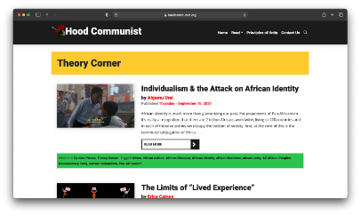
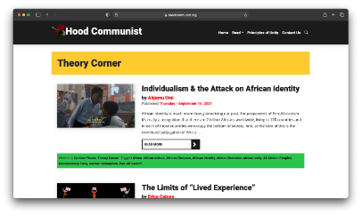

1. About

A Salonnière's goal was to host a gathering for intellectual individuals, namely men, in France in the 1700s. Think of this index as a Salonnière's development of topics, with the intellectuals being community organizers and activists, whose identities vary in a multitude of ways, united by the guiding force to create radical change. The first edition of this index centers the ground work laid by Black and Indigenous communities of the past while highlighting the work these groups do in the present as they utilize their collective power and wisdom to continue the work towards solidarity and communal care. Let this index be proof of concept of what a gathering of ideas, organizations, reading materials and care could look like in one space.


 
